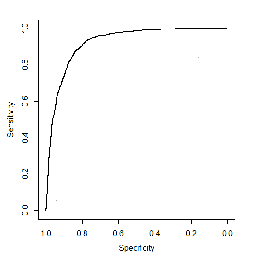

To Build a machine learning predictive model and predict which customers should be targeted for rolling out term deposits by bank.( We use LOGISTIC REGRESSION here. )
Evaluation Criterion :KS score on test data. larger KS, better Model
A Portugese bank is rolling out term deposit for its customers. They have in the past connected to their customer base through phone calls. Results for these previous campaigns were recorded and have been provided to the current campaign manager to use the same in making this campaign more effective. Challenges that the manager faces are following: • Customers have recently started to complain that bank’s marketing staff bothers them with irrelevant product calls and this should immediately stop • There is no prior framework for her decide and choose which customer to call and which one to leave alone She has decided to use past data to automate this decision, instead of manually choosing through each and every customer. Previous campaign data which has been made available to her; contains customer characteristics , campaign characteristics, previous campaign information as well as whether customer ended up subscribing to the product as a result of that campaign or not. Using this she plans to develop a statistical model which given this information predicts whether customer in question will subscribe to the product or not. A successful model which is able to do this, will make her campaign efficiently targeted and less bothering to uninterested customers.
Logistic Regression, KS Method, Cutoff, Confusion Matrix, Accuracy, Sensitivity, Specificity.
We will build a Logistic regression model to predict the response variable "y" (whether the client subscribed to a term deposit or No.)
Thus the target no. of customers to be focused upon for term deposits by the bank are predicted successfully using logistic regression model with an accuracy of 84.15% using KS method.
The KS score examined came out to be: 0.72/1.00[ i.e. Our Model and Predictions were VERY GOOD]
Click to View Rpubs Reportggplot for behavior of Predicted Scores on train dataset.
ROC CURVE for Real outcome (y) vs Predicted Score on test_25 datasets